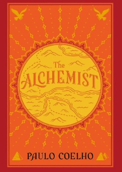
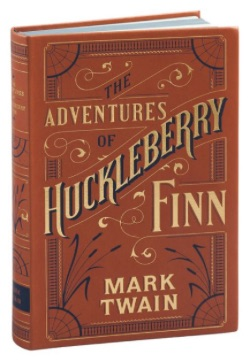
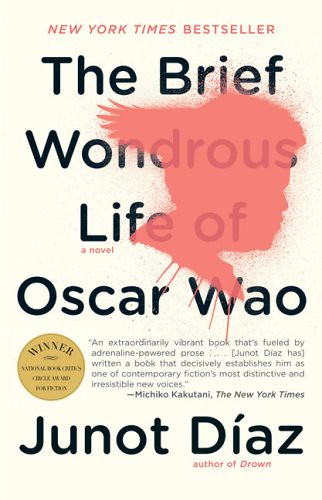

I was interested in taking this class as I wanted to learn more about the process of creating web pages and combining these new skills with others I've learned so far at Tufts. In the post-bacc program, I did not have as much freedom to branch out with my courses, but now that I am in the Masters program I've been given more options in terms of courses to choose from and Web programming definitely caught my eye. In undergrad and for my first classes at Tufts I mainly focused on utilizing C++, however in my software engineering course I was able to get some experience with Java programming which can be verbose but I did enjoy it! Currently, I am taking this Web programming course and the cybersecurity class to branch out and gain some more skills.
Favela Grill is my favorite restaurant currently. It is a place me and my family frequent on special occasions, such as birthdays, and we all love the menu and service. Their churrasco mixto is what we usually order and it is great.

This slice is an example of my favorite quick bite to eat while in NYC. A fresh pepperoni slice out of the oven with a hint of parmesan and chili flakes is the best!
| Name | Beloved | The Alchemist | The Adventures of Huckleberry Finn | The Brief Wondrous Life of Oscar Wao |
|---|---|---|---|---|
| Cover | |
 |  |  |
| Author | Toni Morrison | Paulo Coelho | Mark Twain | Junot Diaz |
| Summaries *generated by chat gpt | "Beloved" by Toni Morrison is a powerful novel that explores the haunting legacy of slavery through the story of Sethe, a former slave who is haunted by the ghost of her daughter and grapples with the trauma of her past. It delves into themes of identity, love, and the enduring impact of historical atrocities. | "The Alchemist" by Paulo Coelho is a captivating tale of Santiago, a shepherd boy, on a journey to fulfill his dreams of finding treasure. Along the way, he discovers the importance of following one's heart and the transformative power of pursuing one's personal legend. | "The Adventures of Huckleberry Finn" by Mark Twain follows the escapades of Huck and his friend Jim, a runaway slave, as they travel down the Mississippi River, encountering moral dilemmas and exposing the injustices of society. It's a classic coming-of-age story that satirizes the pre-Civil War South while exploring themes of freedom, friendship, and individual conscience. | "The Brief Wondrous Life of Oscar Wao" by Junot Diaz is a multi-generational novel that tells the story of Oscar, a young Dominican-American who struggles with love, identity, and the legacy of his family's curse. It weaves together elements of sci-fi, fantasy, and Dominican history, offering a unique and insightful exploration of cultural displacement and the pursuit of love and acceptance. |